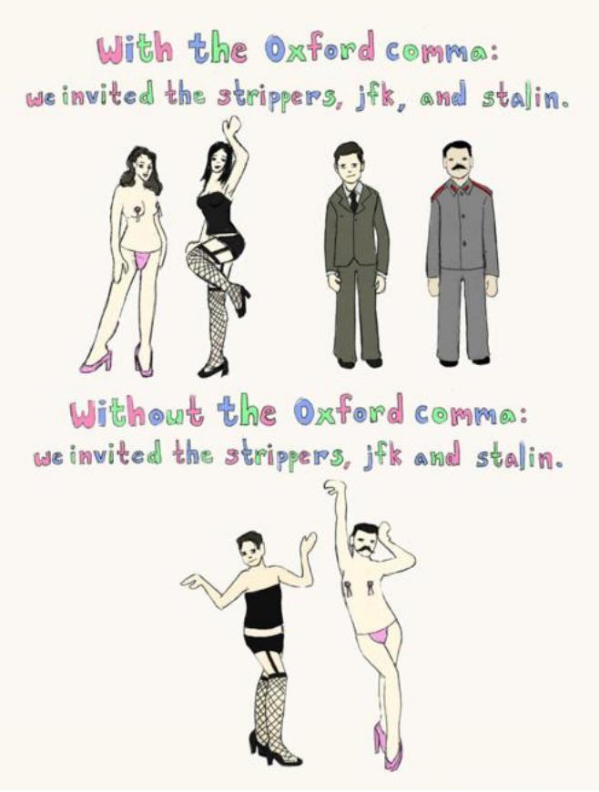

public: True class: center, middle # 写作中的常见问题 蒋炎岩 <jyy@nju.edu.cn> <div class="row justify-content-md-center"> <div class="center author-block"> <p><a href="http://www.nju.edu.cn/">南京大学</a></p> <img class="inline-img" height="64px" src="../static/img/nju.png"/> </div> <div class="center author-block"> <p><a href="http://cs.nju.edu.cn/">计算机科学与技术系</a></p> <img class="inline-img" height="64px" src="../static/img/njucs.jpg"/> </div> <div class="center author-block"> <p><a href="http://moon.nju.edu.cn/">计算机软件研究所</a></p> <img class="inline-img" height="60px" src="../static/img/ics-nju.png"/> </div> </div> --- class: center, middle # 在开始写作之前 --- # Academic Integrity: 剽窃 > Plagiarism occurs when you use another’s words, ideas, assertions, data, or figures and do not acknowledge that you have done so. > If you use the words, ideas, or phrasing of another person or from published material, you must > > Use quotation marks around the words and cite the source, or > Paraphrase or summarize acceptably and cite the source. > If you use charts, graphs, data sets, or numerical information obtained from another person or from published material, you must also cite the source. > > You must always acknowledge your sources by citing them. In this way, you have the right to use another’s creative output by giving that person credit for the work s/he has done. > ([Academic Integrity at MIT](https://integrity.mit.edu/handbook/what-plagiarism)) --- # 无论中文/英文，准备好 “讲故事” 的逻辑 .red[先考虑好研究贡献] (先决条件是熟悉领域内的相关工作) * 论文是为了说服别人 * the problem, * its significance and difficulty, and * proof of solving it ---- 你要想你的读者 (reviewer) 是自带 SMT Solver 取反的 * 只要你没有 clarify，读者就会.red[接受你表述的反面] * 如果你不 argue 问题的重要性，读者就会认为它不重要 * 如果你使用了复杂的方法，需要解释清楚为什么简单的方法不 work --- # 讲故事：常见套路 从已有的东西开始：用得多 * → 💡 提升 XXX 能带来经济效益 * → 💡 出 XXX 问题危害很大 * → 💡 不解决 XXX 就无法实用 ---- 从不存在的东西开始：前景好 * → 💡 如果这件事做成，有 XXX 好处 ---- .blue[如果全文的方法和实验证据能 defend 你 claim 的故事，论文基本就成功了] * 常见问题：研究问题毫无价值 (<strike>退学</strike>)、没有故事、逻辑断裂、证据不足 --- # 例子：EXPLODE 故事 & 问题： > Storage systems ... have a simple, basic contract: you give them data, they do not lose or corrupt it. > Often they store the only copy, making its irrevocable loss almost arbitrarily bad. > Unfortunately, their code is exceptionally hard to get right, ... > > This paper describes EXPLODE, a system that makes it easy to systematically check real storage systems for errors. ---- 证据： > It found serious bugs in a broad range of real storage systems (without requiring source code): ... We found bugs in every system we checked, 36 bugs in total, typically with little effort. (这是在 2006 年……已内定 best paper award) --- # 软件工程研究 .blue[在某个方面改进软件的生产或使用] (usefulness) ---- 请大家考虑一下你的研究工作： * 你的目标用户是谁？ * 你希望在何种程度改进了他们的软件工程实践？他们为什么要 care about 你的工作？ * 你以怎样的方式证实 (或预计怎样证实) 你的工作是有效的、达到了你 (和用户) 的预期？ -- count: false ---- 以上是一个 “一分钟” 版本的 talk，用于向其他人推销自己 (系里偶遇的老师、开会时遇到的伙伴……) 时使用 --- class: center, middle # 全文表达 (Presentation) --- # 表达：目标 让读者能准确、轻松地理解你想表达的内容 * 作为 native speaker，只要能准确读懂，即便行文新手、用词糟糕，也是能容忍的 * 但以下东西是绝对读不下去的 * 逻辑混乱 * 假大空 ---- > Important goal: Don’t make readers a hard time in reading your papers! Your technical content is already hard enough. --- # Concise and Precise 我们在学英语时，经常要求写一个 “不少于 XXX words 的作文” * 习惯：写不出东西的时候，反复说一些没用的来凑 * 忘记了写作的目的是.red[准确地表达] (让别人理解) * 对经历过高考血洗的人来说，母语写作都没问题…… ---- > Vigorous writing is *concise*. A sentence should contain no unnecessary words, a paragraph no unnecessary sentences, for the same reason that a drawing should have no unnecessary lines and a machine no unnecessary parts. > This requires not that the writer make all his sentences short, or that he avoid all detail and treat his subject only in outline, but that *every word tell*. > .float-right[—— The Elements of Style] --- # 改进全文表达：把握全文的 Logic Flow 全文的逻辑应当是一致、连贯、紧凑的 * introduction 是 abstract 的顺序展开 * 全文是 introduction 的顺序展开 * 段落是 topic sentence 的顺序展开 * 每个句子都承接上句、引导下句 * 读者可以顺着你的逻辑，快速验证行文的合理性 * 我们经常读自己/学生的论文时遇到：<span class="red">逻辑断了</red> ---- Q: 大家的 research proposal 是按什么顺序写作的？ --- # 两种写作方式 Top-down approach * abstract = introduction 的 topic sentences → introduction → 全文 * Pros: 进度/形式上比较容易把控 * Cons: 如果后续写作时有更好的表达，可能导致全文大改 ---- Bottom-up approach * 技术内容和 evaluation (plan) → 缩减成 introduction → 缩减成 abstract * Pros: 先有技术内容的提炼，通常完成度更好 * Cons: 技术部分的 polish 时间难控制 --- class: center, middle # Zoom In: 句子 --- # 基本原则 (1): 消灭语法错误 首先，不要有拼写错误 * .red[没有导师/读者愿意看到还有红线的文档] ---- 消灭语法错误对 non-native speakers 来说其实相当困难…… * (对我来说尤其困难) * 时态/单复数 * 冠词 (a 和 the) * that v.s. which? * 介词 which? --- # 基本原则 (2): 保持逻辑流 > (1) [Topic sentence] Large-scale distributed systems are difficult to build and test. > > (2) On top of the non-determinism arising out of concurrent exchange of messages, these systems must account for partial failures, where components or communication can fail along the way and produce incomplete results. > > (3) Fault-tolerant components are difficult to design and reason about, ... distributed systems → basic ideas → the hard part * 虽然有长句 (2)，但读起来非常容易 * 原因 (non-deterministic message exchange) → 后果 (must account for partial failure) → 补充解释 (fail along the way) * 连接前后 (“these systems”, “account for partial failures”) --- class: center, middle # Zoom In: 用词 --- # 基本原则 (1): Be Precise 每个单词都有它的 *embedding* * 这使得英文在科技文献表达时更容易选出最精确的那个词 * 反复磨炼、反复修改，直到你认为非常清楚地完成了表达 ---- 含义模糊、过强、offensive、口语化表达等都要避免 * it's → it is; can't → cannot * since → because (components may become coupled since the adaptation introduces dependency) * very well → satisfactory, ... (?) --- # 基本原则 (2): Be Consistent 针对同一个术语，坚持使用同一个名字 * 例如 software, program, code 很多时候可以换用 * 但一旦用某个 term 指代某个含义 (比如用 code 表示待分析的代码)，就要在全文中执行下去 * 否则会引起读者的疑惑 --- class: center, middle # Zoom In: 标点 (都是细节，就举两个容易错的例子吧) --- # 逗号：Oxford Comma .center[] --- # 引号 引号中的标点要非常小心 * I wrote “fixing a mistake.” That's correct in US grammar. Or, “fixing a mistake,” if it were followed by a comma. * Not in the UK: you'd write “fixing a mistake”. ---- The one exception we agree on: If the quote is around a symbol. For instance: * We denote this situation with the label “<math>O</math>”. * 冒号后独立句首词既可以大写，也可以小写 --- class: center, middle # 小结 --- # 写作：学习建议 这是一个积累的过程 * 从 native speaker、well-polished papers 中学习 * 读够量是做一切研究的先决基础 * 你会发现很多 styles，选你最喜欢、认为最好的学习 (比如有人拒绝长句，有人遛的飞起) ---- 有用的资源 .float-right[] * (QDT) Grammar Girl's Quick and Dirty Tips * (EOS) The Elements of Style * (CMOS) The Chicago Manual of Style --- class: center, middle # 公开处刑时间